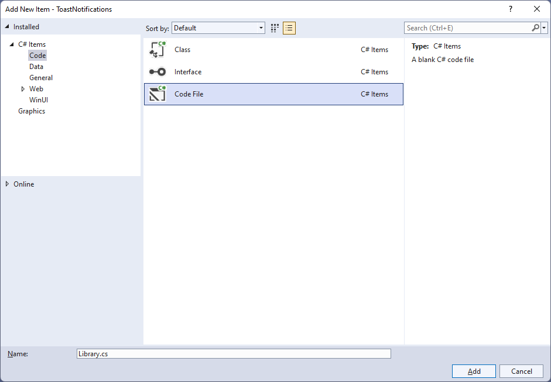
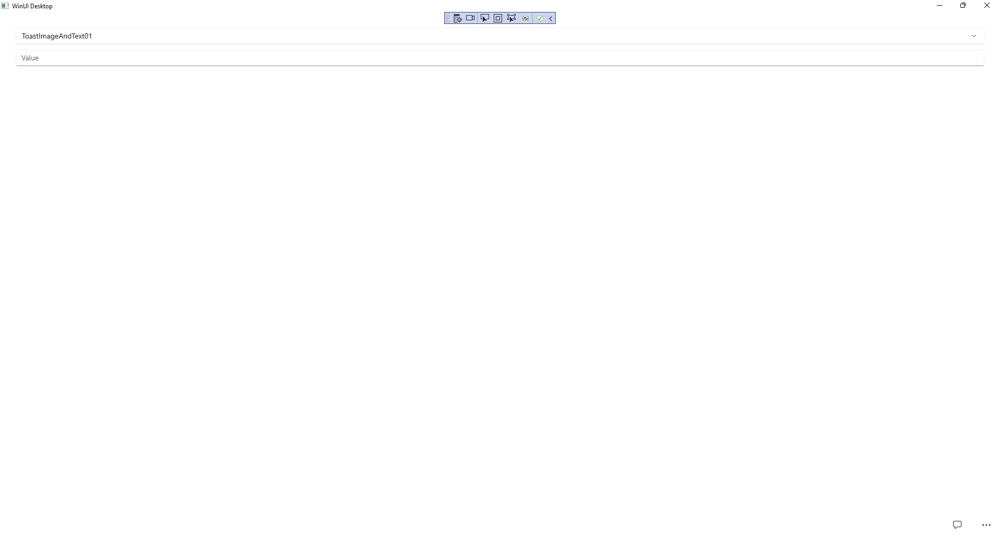
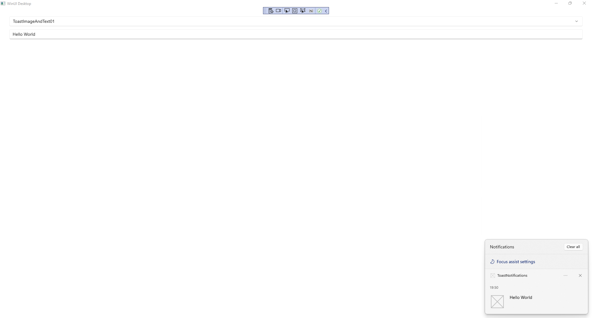

Toast Notifications
Learn to use Toast Notifications in Windows App SDK with this Tutorial
Toast Notifications shows how you can use ToastNotification with the Windows App SDK.
This allows you to display a Toast Notification for your application in the Notifications pane in Windows.
Step 1
Follow Setup and Start on how to get Setup and Install what you need for Visual Studio 2022 and Windows App SDK.


Step 2
Then in Visual Studio within Solution Explorer for the Solution, right click on the Project shown below the Solution and then select Add then New Item…

Step 3
Then in Add New Item from the C# Items list, select Code and then select Code File from the list next to this, then type in the name of Library.cs and then Click on Add.

Step 4
You will now be in the View for the Code of Library.cs, within this type the following Code:
using Microsoft.UI.Xaml.Controls;
using System;
using System.Collections.Generic;
using System.Linq;
using Windows.Data.Xml.Dom;
using Windows.UI.Notifications;
internal class Library
{
public List<string> Options =>
Enum.GetValues(typeof(ToastTemplateType))
.Cast<ToastTemplateType>()
.Select(s => s.ToString())
.ToList();
public void SetToast(ComboBox options, TextBox value)
{
var selected = options.SelectedValue as string;
ToastTemplateType template = Enum.Parse<ToastTemplateType>(selected);
XmlDocument toast = ToastNotificationManager.GetTemplateContent(template);
XmlNodeList text = toast.GetElementsByTagName("text");
if (text.Length > 0)
{
text[0].AppendChild(toast.CreateTextNode(value.Text));
}
XmlNodeList image = toast.GetElementsByTagName("image");
if (image.Length > 0)
{
image[0].Attributes.GetNamedItem("src").NodeValue =
"Assets/Square44x44Logo.scale-200.png";
}
ToastNotification notification = new(toast);
ToastNotificationManager.CreateToastNotifier().Show(notification);
}
}
The Class that has been defined in Library.cs has a Property for Options,
which is the list of all possible values for the Enum of ToastTemplateType
for use with the ComboBox. Then there is the Method for SetToast which will
get the SelectedValue of a ComboBox passed in and use this to get the
ToastTemplateType that was selected in the ComboBox. There is also a
TextBox passed in for what value should be shown in the Toast Notification.
Then there is some code to build up the elements of the Toast Notification
using XML which is needed to create the ToastNotification which includes
the text and there is also an image set to one of the Assets in the
application for any ToastTemplateType that supports Images and this is then
is used to Show the notification with ToastNotificationManager.
Step 5
Step 6
In the XAML for MainWindow.xaml there will be some XAML for a StackPanel, this should be Removed:
<StackPanel Orientation="Horizontal"
HorizontalAlignment="Center" VerticalAlignment="Center">
<Button x:Name="myButton" Click="myButton_Click">Click Me</Button>
</StackPanel>
Step 7
While still in the XAML for MainWindow.xaml above </Window>, type in the following XAML:
<Grid>
<Grid.RowDefinitions>
<RowDefinition Height="Auto"/>
<RowDefinition Height="*"/>
<RowDefinition Height="Auto"/>
</Grid.RowDefinitions>
<StackPanel Grid.Row="0" Margin="25">
<ComboBox Margin="5" Name="Options"
HorizontalAlignment="Stretch"/>
<TextBox Margin="5" PlaceholderText="Value"
Name="Value" HorizontalAlignment="Stretch"/>
</StackPanel>
<CommandBar Grid.Row="3" VerticalAlignment="Bottom">
<AppBarButton Icon="Comment" Label="Accept" Click="Accept_Click"/>
</CommandBar>
</Grid>
This XAML features a Grid with a StackPanel for the ComboBox for the Options and a TextBox for the Value, along with an AppBarButton to show the ToastNotification when Clicked.
Step 8
Step 9
In the Code for MainWindow.xaml.cs there be a Method of myButton_Click(...) this should be Removed by removing the following:
private void myButton_Click(object sender, RoutedEventArgs e)
{
myButton.Content = "Clicked";
}
Step 10
Once myButton_Click(...) has been removed, type the following Code below the end of the Constructor of public MainWindow() { ... }:
private readonly Library _library = new();
private void Accept_Click(object sender, RoutedEventArgs e)
{
_library.SetToast(Options, Value);
}
The Method of Accept_Click will call the Method within Library.cs of SetToast from an Instance of Library called _library created with new().
Step 11
While still in the Code for MainWindow.xaml.cs within the Constructor of public MainWindow() { ... } and below the line of this.InitializeComponent(); type in the following Code:
Options.ItemsSource = _library.Options;
Options.SelectedIndex = 0;
The Constructor of public MainWindow() { ... } should look like the following:
public MainWindow()
{
this.InitializeComponent();
Options.ItemsSource = _library.Options;
Options.SelectedIndex = 0;
}
These set up the Properties for the ComboBox for ItemsSource to the list of Options from Library and for SelectedIndex to the first index which is 0 to select the first item.
Step 12
Step 13
Once running you should see the ComboBox, TextBox and CommandBar with the Accept option.

Step 14
You can select a value from the ComboBox then type a value in the TextBox and then use Accept to see a Toast Notification in the Notifications for Windows for the application.

Step 15